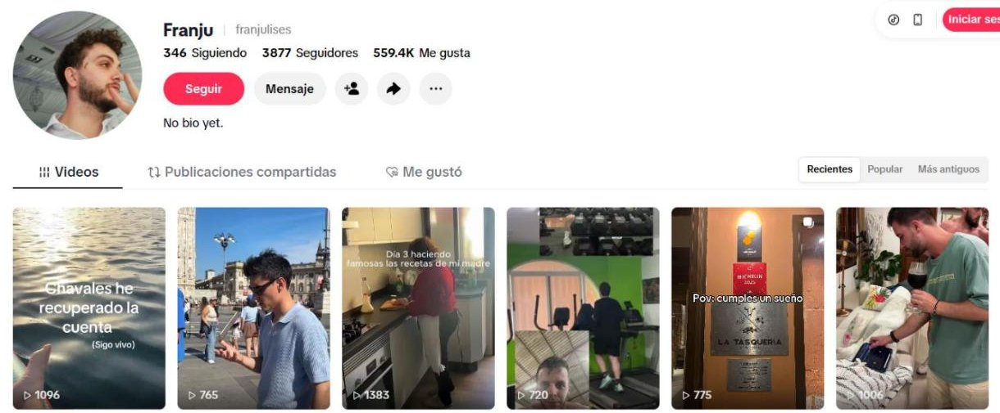
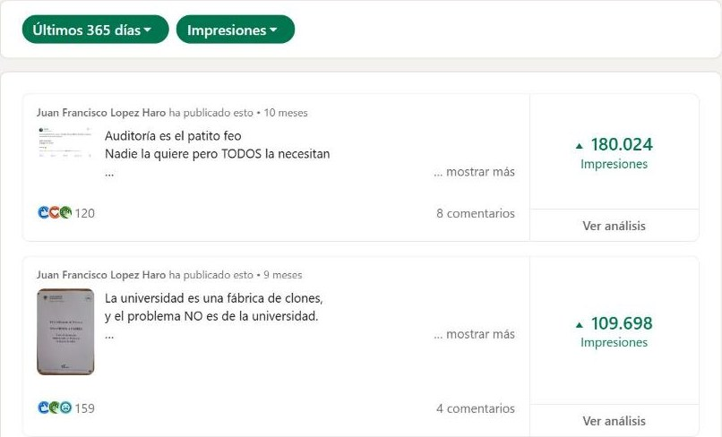
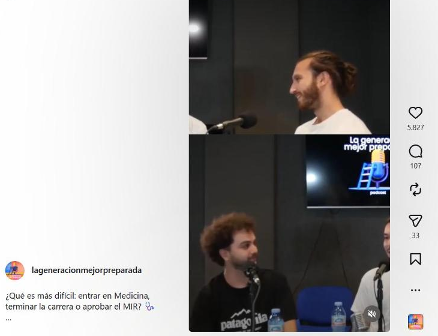
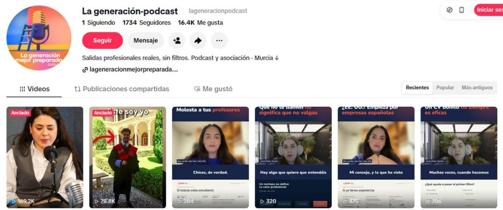
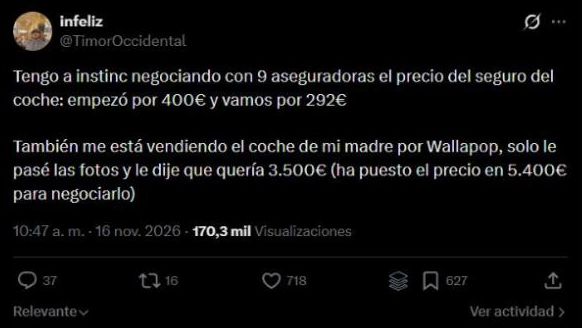

Mis números reales en redes sociales
TikTok · LinkedIn · Instagram · X · YouTube
Llevo tres años subiendo contenido a redes sociales y haciendo experimentos, y he conseguido viralizar contenido en todas.
Lo que me ha funcionado en cada red
TikTok
Fue lo primero que probé y pillé casi 7 millones de reproducciones en un solo vídeo. Después he viralizado con otras cuentas pero sin pasar de los 100k. TikTok va por tramos: si superas los 30k y el vídeo es bueno, normalmente sube. Los vídeos con AI slop no te van a conseguir esos números. Si pones tu cara, mejor.
Es lo que más trabajo, porque llevo tres cuentas: FANDIT, FANDITO y la mía personal. Lo que mejor funciona es una foto (no AI slop), dar tu opinión y tirar polémica contra enemigos genéricos.
Esta es la más jodida, huye de ahí. Casi todos los virales que ves han sido pagando. Funcionan bien los reels de prueba.
YouTube
Métele pasta a ads para que te coloque arriba (con 50 € te sobra) y luego tira de manera orgánica solo.
X
Es la más jodida, pero es la mejor con diferencia: el valor está ahí. Si eres tech, dev, o te mola saber toda la actualidad de la IA y del mundo, es tu red. Yo he empezado a publicar hace poco y en 3 semanas ya he hecho algún viral. La clave es NO ESCRIBIR CON IA y contar cosas útiles, como en casi todas.
Todas tienen en común la constancia y probar, probar y probar. A mí me flipa, y por eso he viralizado.
Resumen
| Publicación | Red social | Formato | Cuenta | Cifra |
|---|---|---|---|---|
| Trabajar en Australia por 30 $/hora | TikTok | Vídeo vertical | @franjulises | 6.800.000reproducciones |
| ¿Medicina o MIR? | Reel (clip de podcast) | @lageneracionmejorpreparada | 394.000reproducciones | |
| Auditoría es el patito feo | Post de texto + enlace | Juan Francisco López Haro | 180.024impresiones | |
| Un agente negociando el seguro | X | Publicación de texto | @TimorOccidental | 170.200visualizaciones |
| Tu primer mes como autónoma | TikTok | Clip de podcast | @lageneracionpodcast | 169.200reproducciones |
| Las recetas de mi madre | TikTok | Vídeo vertical | @myolichef | 111.900reproducciones |
| La universidad es una fábrica de clones | Post de texto + enlace | Juan Francisco López Haro | 109.698impresiones | |
| Lo que nadie te cuenta de las Big Four | YouTube | Vídeo largo (50 min) | La Generación Mejor Preparada | 31.000visualizaciones |
Los casos, uno a uno
1. Trabajar en Australia por 30 dólares la hora
TikTok · @franjulises · 3.878 seguidores · 559.400 me gusta en la cuenta
6.800.000reproducciones
Y detrás, en la misma cuenta: 630.700 · 59.800 · 24.400 · 12.200 reproducciones. Vídeos grabados con el móvil mientras trabajaba con el visado de estudiante en la Gold Coast.
Ver una de las publicaciones →
Cuenta personal de TikTok, diciembre de 2022 en adelante.
2. "Auditoría es el patito feo"
LinkedIn · Juan Francisco López Haro · con Jaime Echaide (KPMG, Deal Advisory)
180.024impresiones · 1.249 interacciones
El segundo mejor de la misma cuenta, "La universidad es una fábrica de clones" con José Pablo (Revolut): 109.698 impresiones y 400 interacciones. El tercero, sobre pasar de ADE en la Universidad de Murcia a Porsche Latin America: 30.279.
Ver la publicación →
Panel de análisis de contenido de LinkedIn.
3. ¿Qué es más difícil, entrar en Medicina o aprobar el MIR?
Instagram · @lageneracionmejorpreparada · con los cardiólogos Adrián Gallego y Javier Blanco (Hospital Virgen de la Arrixaca)
394.000reproducciones · 5.827 me gusta · 107 comentarios
Ver el reel →
Reel publicado en noviembre de 2024.
4. Clips del podcast
TikTok · @lageneracionpodcast · 1.734 seguidores · 16.400 me gusta en la cuenta
169.200reproducciones
Seguido de 80.000 (una persona que se sacó la oposición de registrador de la propiedad), 78.800, 69.600, 40.900 y 26.900. Son clips de las entrevistas del podcast.

Cuenta de TikTok del podcast La Generación Mejor Preparada.
5. Un agente negociando el seguro del coche
X · @TimorOccidental
170.200visualizaciones · 719 me gusta · 628 guardados
Un hilo contando cómo un agente de IA negoció con 9 aseguradoras y bajó el seguro de 400 € a 292 €, y de paso puso a la venta un coche en Wallapop.
Ver la publicación →
Publicado el 16 de noviembre de 2026.
6. Las recetas de mi madre
TikTok · @myolichef (Oli recetas) · 932 seguidores · 10.200 me gusta en la cuenta
111.900reproducciones
"Día 1 haciendo famosas las recetas de mi madre". Detrás: 38.400 y 12.800. Grabado en mi cocina, con mi madre de protagonista, para lanzar My Oli Chef sin gastar un euro en publicidad.
Ver una de las publicaciones →
Cuenta de TikTok de My Oli Chef.
7. "Lo que nadie te cuenta de trabajar en Big Four"
YouTube · La Generación Mejor Preparada · 2.600 suscriptores
31.000visualizaciones · 556 me gusta
Entrevista de 50 minutos con Jaime Echaide, 8 años en PwC y KPMG. El episodio con el perfil de Revolut (IEB y Big4) va por 16.000.
Ver el episodio →Episodio en YouTube.